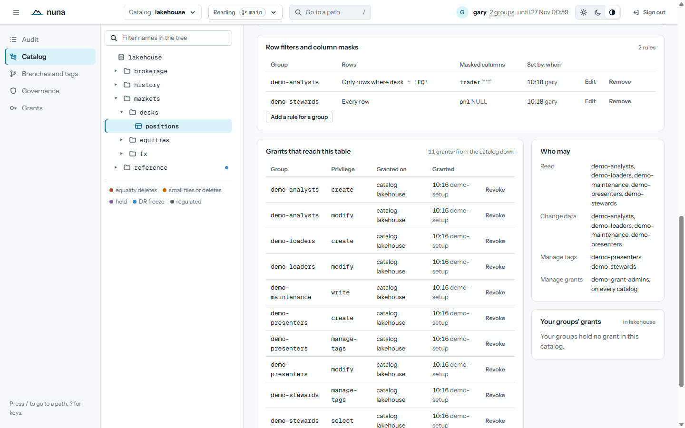

Add a row filter or column mask
Flag a table for row and column rules, add a rule for each group that reads it, and check what a reader in each group sees.
Before you begin
- Two people do this task. A data steward, whose group holds
manage-tagson the table or above it, flags the table. A grant admin, whose group holdsmanage-grantsthere, sets the rules. Separation of duties keeps the two in different groups. - The grant admin is not in the group a rule is for.
- Readers query the table through Trino, set up as Use OPA describes and registered as a trusted engine. Once flagged, the table's files go to no other engine.
- For the curl examples,
NUNAandTOKENare set as Use the APIs with curl describes. The examples use tableequities.daily.positions, whose namespace levels are joined by%1Fin a path.
Flag the table
-
Open the table and select its Access tab.
-
Select Flag for row and column rules in the Governance panel.
-
Select Flag for row and column rules in the dialog.
The dialog Flag positions for row and column rules warns that only a trusted engine reads or writes the files once it is flagged. The console records the attribute with the provenance
console, and the dialog then says the table is flagged for row and column rules.
Set the attribute row-column-policy to true. provenance is required: say where the decision comes from.
curl -sS -X PUT "$NUNA/management/v1/catalogs/trading/namespaces/equities%1Fdaily/tables/positions/attributes/row-column-policy" \
-H "Authorization: Bearer $TOKEN" \
-H "Content-Type: application/json" \
-d '{"value": "true", "provenance": "Data classification review"}'Add a rule for each group
Add a rule for every group that reads the table. Once the first rule exists, a reader in no rule's group sees no rows.
-
Open the table's Access tab and find Row filters and column masks.
-
Select Add a rule for a group.
-
Enter the group in Group.
-
Choose Every row or Only rows where under Rows.
For Only rows where, enter a Trino SQL expression over the table's columns, such as
desk = 'EQ'. -
Select Mask a column for each column to hide, and choose its mask.
The choices are
NULL,'***'and A custom expression. -
Select Save the rule.
The dialog says Saved the rule for trading-analysts.

Set a rule. It answers 204; setting a rule for a group that has one replaces it.
curl -sS -X POST "$NUNA/management/v1/catalogs/trading/row-column-rules" \
-H "Authorization: Bearer $TOKEN" \
-H "Content-Type: application/json" \
-d '{"table": {"type": "table", "namespace": ["equities", "daily"], "name": "positions"}, "group": "trading-analysts", "row-filter": "desk = '"'"'EQ'"'"'", "column-masks": {"trader": "'"'"'***'"'"'"}}'List the table's rules to see each one's version:
curl -sS "$NUNA/management/v1/catalogs/trading/row-column-rules?namespace=equities&namespace=daily&name=positions" \
-H "Authorization: Bearer $TOKEN"{
"table": {"type": "table", "id": "…", "namespace": ["equities", "daily"], "name": "positions", "state": "active"},
"rules": [
{
"group": "trading-analysts",
"row-filter": "desk = 'EQ'",
"column-masks": {"trader": "'***'"},
"set-by": "…",
"set-at": "2026-11-26T15:18:50.054677Z",
"version": 1795706330054677
}
]
}To change a rule only if no one else changed it since you read it, send If-Match: "version" with the new rule. To remove a rule, post {"table": …, "group": …} to /row-column-rules/remove.
If it fails
| What you see | Why | What to do |
|---|---|---|
409 The table does not carry the row/column-policy flag; a steward sets it first, so that only trusted engines read its files … | The table is not flagged. | Ask a data steward to flag it. |
403 no one sets row filters or column masks for a group they belong to: trading-analysts | You are in the group. The console says Another grant admin sets this group's rule. | Ask another grant admin. |
400 A rule filters rows (row-filter), masks columns (column-masks), or both; to give a group every row, set row-filter to true | The rule has neither. | Add a filter or a mask. |
400 … is not a Trino SQL expression: at line 1, column …, … | Trino's parser rejected the expression. | Correct it at the place named. |
400 column-masks names …, which the table's current schema does not have; … | A mask names a column the table does not have now. | Use the column's current name. |
412 The rule for trading-analysts is at version …, not the one named in If-Match; another change came first: list the rules again | Someone changed the rule after you read it. The console says Another grant admin changed this rule since you opened it. Close this; the list shows theirs. | List the rules and decide again. |
404 No row filter or column masks for trading-analysts on the table | A remove named a group without a rule. | List the rules. |
409 The table has row filters or column masks; the grant admin removes them before its row/column-policy flag can be removed or set false | The steward tried to remove the flag while rules stand. The console says Rules stand: the grant admin removes them first. | Remove every rule first. |
400 The row-column-policy flag goes on a table, not on a namespace: only a table's own flag is enforced, so set it on each table to protect | The flag was set on a namespace, catalog or view. | Flag each table. |
403 The change renames or drops a column a row filter or column mask names: … | An engine tried to rename or drop a column a rule names. | Change or remove the rule first, then change the schema. |
403 table positions has a row/column policy; only a trusted engine that enforces it gets storage access | A reader used Spark, PyIceberg or another untrusted engine. | Read the table through Trino. |
See also
- Row filters and column masks: how rules combine for a reader in several groups.
- Row-level security and column masking: how the rules reach Trino.
- Use OPA: setting up Trino's access control.
- Row and column rules API: every rule endpoint.
- The table page: the Access tab's panels.
How this page was checked
Written from catalog-server/src/main/java/nuna/catalog/server/security/RuleRoutes.java, catalog-server/src/main/java/nuna/catalog/server/security/RuleColumnGuard.java, catalog-server/src/main/java/nuna/catalog/server/security/RowColumnReadRoutes.java, catalog-server/src/main/java/nuna/catalog/server/governance/GovernanceRoutes.java, catalog-server/src/main/resources/nuna/ui/rules.js and catalog-server/src/main/resources/nuna/ui/panels.js, checked against commit b3e8582f on 2026-11-26.
The rules listing and each reader's own answer were read from the local demo with GET requests on its flagged table. Flagging and setting rules were not run: the demo is shared.